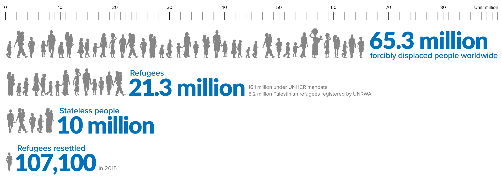

Author Denali Marsh is attending the University of San Francisco for computer science, and is interested by both the international refugee crisis as well as data visualization in d3.js. This project was developed for the University of San Francisco's Data Visualization course, with the aim of shedding light on the global refugee crisis.

It can be difficult to grasp how overwhelming the refugee crisis is - the dataset visualized in this project represents millions of people experiencing forced migration over an extended time period. Through the selected visualizations, we hope to bring these faceless refugees center stage and facilitate new ways of conceptualizing the crisis.